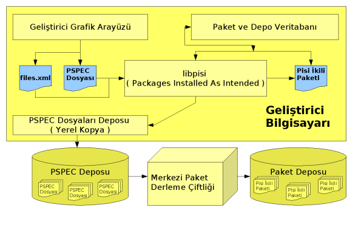
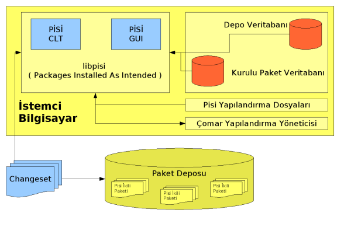

PISI
(Packages Installed Successfully as Intended)
S. Çağlar Onur, Onur Küçük, Barış Metin, A. Murat Eren, Eray Özkural,
Gürer Özen
(Pre-Alpha)
İçindekiler
1 Giriş
Paket, bir uygulamayı ya da işletim sisteminin bir parçasını tüm bileşenleriyle
toplu olarak ifade eden bir kavramdır. Uygulamaların bir yerden bir
yere taşınması (örneğin bir CD yada ağ kaynağından gelip, sisteme
kurulması) sırasında bazı bileşenlerin geride unutulmamasını sağlar.
Bir sistemdeki onbinlerce dosyayı, görevleri ve ait oldukları uygulamalar
bazında birkaç yüz pakete ayırarak yönetilebilir kılar. Kullanıcının
büyük bir sistemde neler bulunduğuna hakim olabilmesini kolaylaştırır.
Bu paketleri kurup kaldırmak, çeşitli kaynaklardan temin etmek, sorgulamak,
sistemdeki değişiklikleri takip etmek için, paket yöneticisi adını
verdiğimiz bir uygulamaya ihtiyaç vardır.
2 Paket Yöneticisi Gereksinimleri
Bu kısımda önceki bölümde tanımlanan paket yöneticisi kavramının,
sunması beklenen gereksinimler listelenmiştir.
2.1 Kullanıcı Gereksinimleri
Kullanıcı gereksinimleri, bilişim okuryazarı olarak daha önce tanımladığımız
1 kullanıcı profiline bağlı kalınarak çıkarılmıştır.
-
Bilişim okuryazarının temel isteği, sisteme istediği uygulamaları
kolayca kurabilmekten ibarettir.
-
Kur emri, komut satırından, grafik arayüzlerden, ya da sistemin otomatik
olarak bir pakete ihtiyaç olduğunu saptamasıyla kolayca verilebilmeli,
bu görev mümkün olduğunca soru sorulmadan ve kullanıcıyı rahatsız
etmeden yerine getirilmelidir.
- Kullanıcı, paketin sistemde doğru şekilde çalışabilmesi için gerekli
olan yapılandırma gereksinimlerinin karşılanmasından mümkün olduğunca
yalıtılmalıdır. Yapılandırma ile ilgili görevler paket yöneticisi
dışındaki bir araçla otomatik sağlanmalı, ya da kullanıcının verdiği
emirlerle sonradan yapılabilmelidir.
- Kurulum mümkün olduğunca hızlı olmalıdır.
- Kurulu programların yeni sürümleri çıktıkça, veya üzerinde düzeltmeler
ve güvenlik onarımları yapılmış yeni paket sürümleri yayımlandıkça,
kullanıcı elindeki uygulamaları güncellemek isteyecektir.
-
Kullanıcı vakti yada ağ bağlantı hızı yetersiz olduğunda acil önem
taşıyan ve yapılması gerekli güncellemeleri, diğerlerinden kolayca
ayırabilmelidir; bunun yapılabilmesi için paketin her sürümündeki
güncellemelerin önem derecesi (yeni özellikler, hata düzeltmeleri,
güvenlik açığı düzeltmesi) paketleme esnasında belirtilebilmelidir.
- Bir paketin eski veya deneysel sürümlerini kurmak bilişim okuryazarının
bir ihtiyacı değildir. Dolayısıyla eski sürümler ve geliştirme sürümleri
alternatifleri ile kullanıcının kafasının karıştırılmaması için; kullanıcı
paketler deposunda her eriştiğinde en son düzeltmeleri içeren son
ve tek bir sürüme ulaşabilmelidir. Bu hem basitlik sağlar, hem de
kullanıcının istemeyerek yanlış bir paket kurmasının önüne geçer.
- Paket güncelleme ile ilgili paket bazında ayrı ayrı politikalar belirlenmesi
yukarda bahsedilen kullanıcı profilinden bakıldığında gereksiz ve
kafa karıştırıcıdır.
- Nerdeyse her uygulama kendi sürüm numarası verme politikasına sahip
olduğundan, paketin asıl sürüm numarası yanında, düzenli olarak artacak
bir numara daha vererek, kullanıcının kolayca hangi sürümlerin yeni
olduğunu ayırt edebilmesi sağlanabilmelidir (aynı uygulama sürümünün
çeşitli hata düzeltmeleri içeren farklı paket sürümleri olabileceği
de düşünülürse bunun önemi daha net bir şekilde ortaya çıkmaktadır).
- Kullanıcı, artık ihtiyaç duymadığı bir uygulamayı, yer ve takip tasarrufu
amacıyla kaldırmak isteyebilir. Kullanıcının bu seçimi kolayca yapabilmesi
için, hiç bir paket tarafından ihtiyaç duyulmayan paketler, kurulu
paketlerin kapladığı alan gibi bilgiler paket yöneticisinden kolayca
alınabilmelidir.
- Kullanıcı sistemde nelerin kurulu olduğunu, hangi paketleri kurabileceğini,
kurulu paketlere ait bilgileri, sistemdeki bir bileşen veya dosyanın
hangi uygulamaya ait olduğunu ve benzeri paket yöneticisinden kolayca
alabilmelidir.
- Paketler farklı hedeflere kurulabilecek biçimde ``relocatable''
özellik taşımalıdır (bu, farklı hedeflere kurulum, ya da başkasına
ait sistemde ev dizinine kurulum gibi yeteneklerin sağlanması için
gereklidir).
- Paket bileşenlerinin değişip değişmediği kontrol toplamları, özet
fonksiyonları yardımıyla tespit edilebilmelidir. Paket yöneticisinin
böyle bir durumu kontrol edebilmesi, ve örneğin bir kullanıcı hatası
sonucu silinen/değişen dosyaları tekrar temin edip düzeltebilmesi
kullanıcıya kolaylık sağlar.
- Uygulamayı kod olarak çekip, sisteme özel değişik ayarlar ile derleyebilecek
Gentoo benzeri bir özellik gereklerimiz arasında değildir. Bu tür
bir özellik aynı kodun farklı makinalarda farklı ikili paketler oluşturmasına
ve teknik destek sağlamanın zorlaşmasına yol açacaktır.
2.2 Paketleyici/Geliştirici Gereksinimleri
-
Paket hazırlamak kolay olmalıdır. Paket hazırlanırken ve inşa edilirken
gerekli dosyalar bir çok ayrı kaynaktan temin edilebilmelidir.
- Pakete ait bilgiler iyi tanımlanmış bir formatta, kolayca erişilebilir
olarak tutulmalıdır. Böylece paketleri işleyen araçlar yapmak kolaylaşacak,
ilerde veri bağımlılığı sorunları olmayacaktır.
- Kolayca paket oluşturabilmek için, tercihen bir grafik arayüz ile
paket hazırlanabilmelidir. Paket yöneticisi, üst geliştirici kodunu
alıp, gerekli bilgileri hazırlatacak, gerekli işaretlemeleri kolayca
yapabilecek bir araç sunmalıdır.
- Paket yöneticisinin geliştirme sistemi, paketleyici hatalarının gözden
kaçmasını zorlaştıracak araçlar sunmalıdır.
2.3 Paket Kaynağı Gereksinimleri
-
Paketler CD, Internet, uzak dosya sistemi gibi çeşitli kaynaklardan
kurulabilmelidir. Temel olarak iki tip kaynak sözkonusudur.
- İlk tip, pakedi tek bir dosya olarak taşıyabilen ve programı depolama
aygıtları, e-posta ve benzeri yollarla dağıtmaya uygun bir arşiv dosyasıdır.
-
Bu arşiv içinden, arşiv hakkında bilgi alınabilecek dosyalara, bütün
arşivi açmadan erişilebilmelidir.
- Mümkünse arşivin yaygın olarak bilinen ve kullanılan araçlarla açılabilmesinde
yarar vardır.
- İkinci tip kaynak ise Internet yada yerel ağ üzerinden bir paket grubunun
indeks bilgilerini ve kendilerini sunabilecek bir ``depo'' sunucusudur.
-
Depodaki değişikliklerin listesi, yerel paket listesiyle mümkün olan
en az veri iletimi ile senkron edilebilmelidir. Bu ağ kaynaklarının
verimli kullanımı ve yeni sürümlerin hızlıca takip edilebilmesi için
gereklidir.
- Paketler birden fazla kaynaktan temin edilebilmelidir.
2.4 Güvenlik Gereksinimleri
-
CD, Internet gibi değişik yollarla temin edilen paketlerin kim tarafından
paketlendiği bilgisi ve içeriğinin yolda değişmediği garantisi için
bir dijital imza sistemi desteklenmelidir.
- Gerektiğinde pakedi oluşturan kişinin imzası dışında, üçüncü parti
kurum veya kişilerin de pakedi deneyip, güvendiğini belirtebilmesi
için, birden fazla kişi tarafından pakedin imzalanabilmesi gereklidir.
2.5 Kurumsal Gereksinimler
-
Paket yöneticisi birden fazla paket kaynağı ile aynı anda sorunsuz
bir şekilde çalışabilmelidir.
- Kurumlar ya da bireyler tarafından ön tanımlı depoda da bulunan
kimi paketlerin değiştirilmiş versiyonlarının bulunduğu depolar overlay
olarak tanımlanabilmelidir.
- Ön tanımlı depoda bulunmayan çeşitli paketlerin bulunduğu depolar
addon olarak tanımlanabilmelidir.
3 Neden PİSİ?
Hali hazırda varolan ve geniş bir kullanım oranına sahip paket yöneticileri
(RPM, DPKG ve Portage) yukarda saydığımız gereksinimlerin kimilerini
bizim olması gerektiğini düşündüğümüz basitlikte yerine getirememekte,
kimilerini de hiç vaad etmemektedirler. Bu paket yöneticilerinin geliştirilmesi
ve istenen noktaya getirilmeye çalışılması yeni ve ayakları yere daha
sağlam basan bir paket yöneticisini yeniden yazmaktan daha kolay değildir.
Daha önemlisi, varolan paket yöneticilerinin paket formatlarında
görevleri
ve
bilgileri birbirinden düzgün bir biçimde ayrılmadıkları
görülmektedir. Bu araçlar basit olarak hazırlanmış ve zaman içinde
ortaya çıkan ihtiyaçları karşılamak için sürekli yeni özellikler eklenerek
bugünkü hallerine gelmişlerdir. Bunun getirdiği karmaşıklığı temizlemek
için aşağıdaki iki ilkeyi temel alan yeni bir paket yöneticisinin
yazılmasına verilmiştir:
-
Kurulum ve yapılandırma birbirinden ayrı iki görevdir. Kurulum,
yalnızca programların kurulumu, güncellenmesi ve kaldırılması esnasında
iş görürken, yapılandırma hem kurulumda hem de çalışan sistemde söz
konusudur. Bu ayrı görevleri sorumluluk sınırları belirlenmiş ayrı
araçların yerine getirmesi uygundur. Uludağ projesi için yapılandırma
işlerini yürütecek araç ÇOMAR'dır. PİSİ bu görevleri
ÇOMAR'a devredecektir.
- Paket meta bilgileri ile paketin derlenme ve kurulumunu yöneten
betikler iç içe geçmemelidir. Varolan paket yöneticilerinde paket
tanımlama dosyaları kod ile bilginin birbirine karıştığı, araçlarla
işlemesi, içinden bilgi çıkarılması zor, net ve kesin tanımlanmamış
biçimlerdedir.
4 PİSİ Tasarımı
4.1 Paket Oluşturma
Bu kısımda bir
PİSİ paketinin oluşturulması ve kullanılması
esnasında gerek duyulacak meta dosyalar ve süreçler netleştirilmeye
çalışılmıştır.
4.1.1 PSPEC Dosyası
PSPEC (PİSİ SPECification) dosyası paketin oluşturulması
için gerekli olan temel bilgiyi tanımlar. Oluşturulacak paketin ne
olduğu, kaynağı, kim tarafından paketlendiği, kaynağa uygulanan yamalar,
hangi başka paketlere ne tür bağımlılıklar içerdiği gibi bilgileri
içerir.
Bir
PSPEC dosyasından, dolayısı ile bir kaynaktan birden
fazla paket oluşturulabilir. Örneğin kcontrol paketi kdebase-kaynaksürümü.paketsürümü.tar.gz
kaynağından oluşturulabilecek yalnızca bir pakettir.
Dosya biçimi XML'dir ve aşağıdaki etiketleri içerir. Her
PSPEC
dosyasında tüm etiketlerin bulunması zorunlu değildir. Bulunması zorunlu
olan etiketler aşağıda (*) ile belirtilmiştir.
PSPEC dosyaları
PSPEC deposunda pakete ait dizinde
pspec.xml adı ile tutulurlar.
Her
PSPEC dosyası
PİSİ etiketi (tag) altında bir
Source ve en az bir
Package olmak üzere iki
ana bölüm içermek zorundadırlar.
PISI
Source
-
Name: (*) Uygulamanın adı.
- Homepage: Uygulamanın web sitesinin URL'sini belirtir.
- Summary: (*) Tek satırlık açıklayıcı bilgi. Çoklu dil desteğine
sahiptir.
- Description: (*) Uygulama hakkında özet açıklama.
Çoklu dil desteğine sahiptir.
- IsA: Paketin bir kategori/sistem/kolleksiyon'a aitliğini
belirtir. Örn: ``k3b is a KDE program''
- PartOf: Paketin hangi bütünün/grubun parçası olduğunu belirtir.
Aitlik özellikleri için Freshmeat'in Trove kategorileri örnek verilebilir.
Örn: ``LyX and TeTex are parts of Tex:Distrubiton''
IsA ve ParfOf bir PİSİ paketinin farklı
türdeki aitliklerini ifade eder. PartOf ile belirtilen bir
Component'in tümünü sisteme kurabilirsiniz. Fakat IsA
ile belirtilen aitlikleri yanlızca sorgulayabilirsiniz.
Source ve Package tagları içerisinde yalnızca birer tane PartOf
tanımlanabiliyor olmasına karşın, birden fazla IsA tanımlanabilir.
- Packager: (*) Paketi oluşturan kişilerin adı/soyadı
ve e-posta adresi belirtir.
-
Name: (*) Paket oluşturan kişinin adı ve soyadı.
- Email: (*) Paket oluşturan kişinin e-posta adresi.
- License: (*) Uygulamanın lisansını belirtir (GPL, BSD,
vb).
- Archive: (*) Uygulamanın orjinal kaynak kodunun bulunduğu
URL'yi belirtir. archType arşiv tipini (tar.gz, tar.bz2,
zip, vb) belirtirken, sha1sum, sha1 ile alınmış özet değerini
belirtir. Her iki attribute (archType ve sha1sum) zorunludur.
- Patches: Orjinal koda uygulanacak yamaların sıralı
bir listesini içerir. Yamalar bu bölümde tanımlanan sıra ile kaynak
koda uygulanır.
-
Patch: Yamanın dosya adını içerir. compressionType
ile varsa sıkıştırma biçimi (gz, bz2, vb) verilebilir. level
ile yamanın patch komutuna seviye verilebilir, level verilmez ise
seviye 0 olarak kabul edilir. Örnek:
<Patch compressionType="gz" level="1">popt-1.7-uclibc.patch.gz</Patch>
- AdditionalFiles: Kaynak ile gelmeyen ama paketin çalışması,
ek özellik kazanması v.s. için gerekli dosyaları belirtir. ( örn;
init betikleri )
-
AdditionalFile: Files dizini altından alınacak dosyayı belirtir.
target attribute dosyanın nereye konulacağını belirtir, zorunludur.
permission attribute varsa dosyanın hangi haklarla saklanacağını
belirtir. owner attribute varsa dosyanın sahip/grup bilgilerini
belirtir. Örnek:
<AdditionalFile target=''/etc/bash/''>bashrc</AdditionalFile>
- BuildDependencies: Pakedi oluşturmak için gereken bağımlılıkları
listeler.
-
Dependency: Bir bağımlılığı tanımlar. Burada bahsedilen bağımlılık
paket bağımlılığı olabilir. versionFrom ve versionTo
attribute bilgileri ile paketin hangi sürüm numarasına bağımlı olduğu
ifade edilebilir. Örnek:
<Dependency versionFrom="1.8">automake</Dependency>
- History: (*) Pakete yapılan güncellemelerin bir listesini
verir. History altındaki güncellemeleri belirten Update
taglarının mutlaka tarihe göre sıralı olması gerekmektedir. En son
güncelleme en üstte bulunmalıdır. Çünkü en son güncellemeden alınan
Version ve Release bilgisi pakete uygulanacaktır.
-
Update: (*) Bir güncellemeyi tarif eder.
-
Type: Güncellemenin tipini belirtir (Security,
Bug, Enhancement, Normal v.s). Eğer bu etiket tanımlı değilse tip
Normal olarak kabul edilir.
- Date: (*) Güncellemenin tarihi.
- Version: (*) Uygulamanın sürüm numarası.
- Release: (*) Pakedin sürüm numarası.
Package: (*) Uygulamadan oluşturulacak bir pakedi
tanımlar. Her PSPEC dosyası en az bir Package etiketi
içermek zorundadır.
Package içerisindeki bazı taglar Source
içerisindekileri tekrarlayabilir. Bu tekrarlamaların bazıları
üzerine yazılırken (override) bazıları birleştirilecektir (merge).
-
Name (tanımlı ise Source bölümündekinin yerine kullanılır)
- Summary (tanımlı ise Source bölümündekinin yerine
kullanılır)
- Description (tanımlı ise Source bölümündekinin yerine
kullanılır)
- License (tanımlı ise Source bölümündekinin yerine
kullanılır)
- IsA (tanımlı ise Source bölümündeki ile birleştirilir)
- PartOf (tanımlı ise Source bölümündekinin yerine kullanılır)
- Conflicts: Paketin çalışması/işlevini yerine getirmesi için,
sistemde olmaması gereken paketleri belirtir, bu örneğin aynı dosyayı
iki paketin de taşıması durumunda olabilir.
-
Package: Olmaması gereken paket adını verir.
- Provides: Paketin sağladığı ÇOMAR OM bacaklarının
bir listesini verir.
- RuntimeDependencies: Pakedin çalışabilmesi için gereken bağımlılıkların
bir listesini verir.
-
Dependency: Bir bağımlılık tanımlar. BuildDependency
ile aynı yapıdadır
- InstallDependencies: Pakedin çalışabilmesi için gereken bağımlılıkların
bir listesini verir.
-
Dependency: Bir bağımlılık tanımlar. BuildDependency
ile aynı yapıdadır
- Files: (*) Pakedin kurulacak dosyalarının tiplerini belirlemek
için kullanılır. Dosya tipleri ile ilgili bigi 4.3 kısmında
verilmiştir.
-
Path (*): Bir dosya/dizin yolunu tarif eder. Verilebilecek
olan fileType attribute ise path'in tipini belirtir. Belge,
paylaşımlı kütüphane, çalıştırılabilir, vb... Eğer fileType verilmezse
path tipi ``other'' olarak tanımlanır. Örnek:
<Path fileType="sharedLib">/usr/lib</Path>
Örnek bir PSPEC Dosyası
-
<?xml version="1.0" encoding="utf-8" standalone="no"?>
<!DOCTYPE PSPEC SYSTEM "http://www.uludag.org.tr/projeler/pisi/pisi-spec.dtd">
<PISI>
<Source>
<Name>popt</Name>
<Homepage>http://www.rpm.org/</Homepage>
<Packager>
<Name>Pardus Man</Name>
<Email>bilgi@uludag.org.tr</Email>
</Packager>
<License>As-Is</License>
<IsA>library:util:optparser</IsA>
<PartOf>rpm:archive</PartOf>
<Summary xml:lang=''en''>Popt command line option parser</Summary>
<Description xml:lang=''en''>Command line option parsing library.
While it is similiar to getopt(3), it contains a number of enhancements, including:
1) popt is fully reentrant
2) popt can parse arbitrary argv[] style arrays while getopt(2) makes this quite difficult
3) popt allows users to alias command line arguments
4) popt provides convience functions for parsing strings into argv[] style arrays
</Description>
<Archive type="targz" sha1sum="66f3c77b87a160951b180447f4a6dce68ad2f71b">ftp://ftp.rpm.org/pub/rpm/dist/rpm-4.1.x/popt-1.7.tar.gz</Archive>
<Patches>
<Patch compressionType="gz" level="1">popt-1.7-uclibc.patch.gz</Patch>
</Patches>
<BuildDependencies>
<Dependency versionFrom="1.8">automake</Dependency>
</BuildDependencies>
<History>
<Update>
<Date>06/14/2005</Date>
<Version>1.7</Version>
<Release>3</Release>
</Update>
<Update>
<Date>06/10/2005</Date>
<Version>1.7</Version>
<Release>2</Release>
</Update>
</History>
</Source>
<Package>
<Name>popt</Name>
<RuntimeDependencies>
<Dependency>gettext</Dependency>
</RuntimeDependencies>
<Files>
<Path fileType="sharedLib">/usr/lib</Path>
<Path fileType="doc">/usr/share/doc</Path>
<Path fileType="doc">/usr/share/man</Path>
<Path fileType="localedata">/usr/share/locale</Path>
<Path fileType="header">/usr/include/popt.h</Path>
</Files>
</Package>
</PISI>
Yukarıdaki örnek dosyada
Package içerisinde tanımlanmayan taglar
Source içerisinden alınarak kullanılacaktır. Bir kaynak paketten
birden fazla ikili (binary) paket oluşturmak için
Package etiketleri
farklı isimler (Name) verilerek arttırılabilir.
Paketler Files
içerisinde bulunan
Path taglarına göre bölümlendirilecektir.
4.1.2 actions.py Dosyası
Bu dosya bir Python betiği olup, kaynağın kurulması, derlenmesi, test
edilmesi, sisteme kurulması gibi işlevleri yerine getiren fonksiyonlardan
oluşur.
Paketin oluşturulması sırasında derleme sistemi
actions.py
içerisindeki 3 fonksiyon adını arar ve çalıştırır;
setup,
build, install. Bu fonksiyonlardan install'ın tanımlanması zorunlu
olmakla birlikte setup ve build sadece tanımlanmışsa çalıştırılır.
actions.py'ler tarafından kullanılmak üzere
PİSİ
tarafından hazır bir
API ActionsAPI adında sunulacaktır.
Örnek bir actions.py dosyası:
-
from pisi.actionsapi import gnuconfig
from pisi.actionsapi import autotools
def setup():
gnuconfig.gnuconfig_update()
autotools.configure(``--with-nls'')
def build():
autotools.make()
def install():
autotools.install()
4.1.3 ChangeLog Dosyası
Pakedin sürümlerindeki değişikliklerin açıklamalarını içerir. Bu dosya
bilindik
ChangeLog stilindedir ve
PSPEC içindeki
History bilgisi ile ilgili değildir.
4.2 metadata.xml
Metadata dosyası bir uygulamanın paket haline geldikten sonra
yanında taşıyacağı ve paket ile ilgili bilgileri barındıran dosyadır.
Metadata dosyası sadece oluşturulan paket ile ilgili bilgileri
tutmaktan sorumludur. Paket hakkında temel bilgi bu dosyadan alınacaktır.
Bu bilgilerin büyük kısmı
PSPEC dosyasının işlenmesi sonucu
ile
Metadata dosyasına yazılmaktadır.
Metadata PSPEC
dosyasından alınan bilgilerin yanında kaynak derlendikten ve paket
oluşturulduktan sonra alınabilecek diğer bilgileri de içerir (paketin
kurulduktan sonra sistemde kaplayacağı alanın boyutu gibi).
Metadata dosyasının içeriği şöyle tanımlanmıştır;
PISI
Source: Bu bölümdeki bilgiler PSPEC dosyasının
Source bölümünden alınır.
-
Name
- Homepage
- Summary
- Description
- Packager
Package
-
Name
- Summary
- Description
- License
- History
-
Update
-
Type
- Date
- Version
- Release
- Conflicts
- Provides: Paketin hangi OM bacaklarını sağladığını belirtir.
- RuntimeDependencies
-
Dependency
- InstallDependencies
- Files
- Distribution: Paketin ait olduğu dağıtımı belirtir (Pardus).
- DistributionRelease: Paketin ait olduğu dağıtımın hangi sürümü
için oluşturduğunu belirtir (1.0).
- Architecture: Paketin hangi mimari için yapıldığını belirtir.
- InstallSize: Paketin sisteme kurulduğunda kaplayacağı alanın
tahmini boyutunu belirtir.
Yukarıda tanımlanan
Metadata dosyası, belirlenecek paket
formatının içinde
XML dosyası olarak tutulacaktır.
Metadata XML dosyalarının yapısı
PSPEC dosyası ile
hemen hemen aynıdır. Yalnızca Metadata paket oluşumundan sonra elimizde
olan bazı ek bilgileri de içerir.
4.3 files.xml
Kaynak derlendikten sonra oluşan dosyaların oluşturulan pakete göre
(Package) sınıflandırılması gerekmektedir. Tek bir kaynaktan
birden fazla paket oluşturulması, kaynağın derlenmesinden sonra oluşan
dosyaların sınıflandırılması ile olur.
files.xml dosyası paket geliştirme aracı/araçları ile oluşturularak
paket içerisine yerleştirilir.
-
Files
-
Package: Dosya serisinin hangi SubPackage'i
oluşturduğunu belirtir. (örn. mysql-devel, mysql-client, mysql-server
, mysql-doc)
- File: Pakete dahil edilecek bir dosyayı tarif eder.
-
Path: Dosyanın, paket içerisindeki yerini belirtir. PISI
gereklerinden biri paketin belirtilen konuma kurulabilmesi olduğu
için konum bilgisi bağımlı (rölatif) olarak verilir.
- Type: Dosyanın tipini belirtir. Paket sisteme
kurulduğunda, veritabanına bu tip tanımı ile işaretlenerek yerleştirilecektir.
Bu tip tanımları şunlardan birisi olabileceği gibi boş da bırakılabilir:
executable, conf, doc, sharedLib, localeData, programData,
header.
- Size: Dosyanın byte cinsinden boyutunu saklar.
- SHA1Sum: Path ile belirtilen dosyanın SHA1 algoritması ile
elde edilmiş cryptographic özet değerini saklar.
files.xml dosyalarının doğrulanması için kullanılabilecek bilgi
pisi-files.dtd
dosyasında tanımlanmıştır.
TODO: Örnek
4.4 PSPEC Deposu
Paketleri oluşturmak için gerekli
PSPEC dosyaları hiyerarşik
bir yapıda bir
subversion deposunda sunulacaktır. Geliştirme
işlemleri bu depo üzerinde yapılacaktır.
PSPEC deposunda
paketler
``ilk harflerine göre'' konumlandırılırlar.
Her paket kendine ait bir dizinde
PSPEC dosyası, paket oluşturma
için gerekli olan ek dosyalar ve yamaların içinde bulunduğu files
/
dizini ve paket oluşturmada kullanılacak betiklerin bulunduğu actions
/
dizinine sahiptir.
Bir geliştiricinin
Pardus Linux'a paket yapması için yalnızca
PSPEC depo sıradüzeninde paket için gerekli olan dosyaları
sağlaması yeterlidir.
Pardus Linux'un belirli zamanlarda
kullanıcılara sunulacak sürümlerini oluşturmak için bu
PSPEC
deposundaki bu bilgiler kullanılarak
PİSİ paketleri oluşturulacaktır.
Bir yazılımın birden fazla sürümünün depoya eklenmesi gerekiyorsa,
farklı paket isimleri ile depoya yerleştirilirler. (gtk1, gtk2 gibi...)
4.4.1 Örnek PSPEC Deposu Sıradüzeni
-
a/
-
acpid/
-
pspec.xml
- actions.py
- ChangeLog
- files/
- patches/
- comar/
4.5 Category ( IsA )
FIXME: Daha anlamlı cümleler ve temiz anlatım
Bir uygulamanın yaptığı işi, ait olduğu kategoriyi belirtir yani uygulamaların
sıfatlarıdır. Bu bilgi kullanılarak bir işi ya da işler grubunu yapan
uygulamalar sorgulanabilir. Örneğin PDF Gösteren uygulamaları göster,
Ogg çalan ve konsoldan çalışan uygulamalar hangileridir gibi.
4.6 Component ( PartOf )
FIXME: Daha anlamlı cümleler ve temiz anlatım
Bir paketler bütününden oluşan anlamlı ve kurulabilir birliği temsil
eder. Yani uygulamaları kapsüller. Örneğin KDE Component'ı içinde
kdebase, kdepim, kdemultimedia v.s gibi kaynakları bulundurur, kdebase
ise kcontrol, konqueror v.s. gibi paketlerden oluşur. Bu bilgi kullanılarak
örneğin KDE Component'ını sisteme kur, kaldır, güncelle gibi eylemler
gerçekleştirilebilir.
4.7 İkili Paket Deposu
Oluşturulan ikili paketler
PSPEC dosyalarının tutulduğu hiyerarşik
yapının aynısına sahip bir depoda sunulacaktır. Paketlerin içerisinde
bulunan
metadata.xml dosyaları depodaki paketlerden alınarak
ve birleştirilerek
pisi-index.xml isminde bir içerik (depo
içeriği) dosyası düzenli aralıklar ile oluşturulacaktır
İçeriğinde mevcut sürümün bilgilerini içerecek bir dosya oluşturulacaktır.
Bu dosya dağıtımın tüm paketleri için şu bilgileri içerecektir;
-
Name
- Summary
- Description
- Version
- Release
- License
- RuntimeDependencies
- InstallDependencies
- Provides
- History
- Conflicts
- PackageSize
- InstalledSize
pisi-index.xml dosyasının biçimi XML'dir. Dosyanın doğrulanması
için kullanılabilecek bilgi
pisi-index.dtd dosyasında tanımlanmıştır.
Bu dosya değiştirilmeyecek ve sadece Dağıtım Sürüm değiştirdiği zaman
yenisi oluşturulacaktır. Aktif sürüm sırasında tüm değişiklikler
ChangeSet
olarak sunulacaktır. İstemci bilgisayarlarca çekilecek ve bağımlılık
çözme, paket veritabanını arama, paket kurma/kaldırma işlemleri bu
dosyaların
pisi.index ile birleştirilmesi yardımı ile yapılacaktır.
ChangeSet'ler
pisi.index dosyasına yama olarak sunulacaklardır.
Kolay oluşturulan, az bant genişliği isteyen ve efektif olmaları açısından
içeriklerini
pisi.index'in bir önceki revizyonlarından olan
farkları arttırımsal (incremental) olarak oluşturacaktır.
Kullanıcı bilgisayarında oluşturulacak depo veritabanı
pisi.index
ve
Changeset'ler yardımı ile yaratılacaktır. Kullanıcının
depodaki paketlerin en güncel bilgilerini alabilmesi için depo veritabanını
düzenli olarak güncellemesi gerekmektedir. Bu işlem bir arkaplan uygulaması
ile otomatik olarak yaptırılabilir.
Depoya eklenecek ikili paketler geliştiriciden alınmayacak,
PİSİ
derleme ortamı tarafından hazırlanıp uygun görülen depoya yerleştirilecektir.
Böylece geliştiricinin sisteminden kaynaklanabilecek olası problemlerin
(sürüm farklılıkları, sorunlu ya da güvensiz yazılımlar vs.) önüne
geçilecektir.
PİSİ istemcisi birden fazla depo ile çalışabilecektir. Birden
fazla depo tanımlanması durumunda öncelikli depo her zaman
Pardus
Resmi Deposu olacaktır. Diğer depolar eşit önceliğe sahip olacaklardır
ve kullanıcı elle belirtmediği sürece tüm depolarda bulunan paketler
resmi depodan alınacaktır.
4.8 PİSİ Paketinin Yapısı
PİSİ paketleri ikili bir biçimde sunulacaktır. Bu bölüm paketlerin
biçemini (format) ve içerdiklerini tanımlamaktadır.
PİSİ paketi, içerisinde aşağıdaki bölümler olan bir
PK-ZIP
paketidir. Bu sayede paketler standart araçlar ile açılabilir/erişilebilir
olacaklardır.
-
metadata.xml: PSPEC dosyasından alınacak ve üzerine
eklenecek bilgiler ile oluşturulacak Meta bilgisi
- files.xml: Paket içerisinde bulunan dosyaların bir listesi
- comar/ dizini: Kurulum betikleri
- install/ dizini: Paketin kurulu biçimi. Paketin sisteme kurulumu
bu dizinin belirtilen dizine açılır.
4.9 Süreçlerin Tarifi
Süreç tarifi paket sisteminin en temel görevlerini, tasarımı özetlemek
amacı ile anlatır.
4.9.1 Paket Oluşturmak

Bir geliştiricinin paket oluşturmak için izleyeceği adımlar şöyledir;
-
Geliştirici Grafik Arayüzü ya da konsol araçları yardımı
ile PSPEC dosyası yukarıda anlatılan yapıya uygun olarak
oluşturulur. Gerekli olacak yamalar ve dosyalar yukarıda tarif edildiği
gibi files/ dizinine yerleştirilir.
- Oluşturulan PSPEC dosyası, hazırlanan paketin derlenebilmesi
için PİSİ tarafından işlenir. Eğer gerekli paketler sistemde
mevcut değil ise bu paketler PİSİ tarafından otomatik veya
kullanıcıya sorularak sisteme kurularak, sistem derleme işlemine hazır
hale getirilir.
- Oluşturulan PSPEC dosyasının Source bölümündeki bilgiler
işlenerek kaynak kod sisteme alınır ve doğruluğu kontrol edilir. Gerekli
dosya ve yamalar yukarıda anlatılan biçime uygun bir şekilde PİSİ
tarafından açılır ve gerekli yamalar koda uygulanır.
- actions.py betiği işletilerek kaynak koddan ikili veri oluşturulur.
- Geliştirici (tercihen grafik arayüz yardımı ile) derleme sonrası oluşturulan
dosyaları, PSPEC dosyasında tanımlanan Package
bölümlerine göre sınıflandırır. Oluşturulacak her paket için files.xml
dosyası yaratılır.
- PİSİ, PSPEC ve files.xml dosyalarını işleyerek paketi
veya paketleri oluşturur.
- Geliştirici oluşturduğu paketleri sisteminde test eder.
- Oluşturulan paket oluşturma dosyaları (PSPEC dosyası, actions.py
ve dizinler) Merkezi Paket Derleme Çiftliği tarafından derlenmek
üzere PSPEC Dosyalar Deposu'na iletilir.
- İletilen PSPEC dosyası Merkezi Paket Derleme Çiftliği
tarafından ikili paket veya paketler haline getirilir.
- Oluşturulan paket veya paketler Paket Deposu'na yerleştirilir.
4.9.2 Paket Kurmak

Bir istemcinin sisteme paket kurmak için izleyeceği yol şöyledir;
-
Sistemdeki ilgili uygulamalardan biri PİSİ'ye paket kurması
için istekte bulunur.
- PİSİ, kendi yapılandırma dosyasını işleyerek, kendi yapılandırma
dosyasının içindeki bilgilerin ışığında Paket Deposundan
deponun durumu ile ilgili bilgileri (ChangeSetler ve kullanıcı
yeni bir depo kullanmaya başladıysa pisi-index.xml) alır.
- Gerekiyorsa Depodan aldığı bilgileri Depo Veritabanına
yerleştirir.
- PİSİ istenen paketin kurulması için gerekli olan bilgileri,
ihtiyaç duyulan paketleri belirler. Gerekli olan paketleri Paket
Deposundan çekerek sisteme kurar. Eğer çakışan paketler var ise bunları
çözer.
- PİSİ Kurulacak paketi Paket Deposundan çeker ve
çektiği paketin doğruluğunu kontrol ederek sisteme kurar. Kurduğu
paket ile ilgili bilgileri Kurulu Paket Veritabanı'na yerleştirir.
- Paketlerin yanında taşıdığı CSL betiklerini ÇOMAR'a
verir.
4.9.3 Paket Kaldırmak
Bir istemcinin sisteme paket kaldırmak için izleyeceği yol şöyledir;
-
Sistemdeki ilgili uygulamalardan biri PİSİ'ye paket kaldırmak
için istekte bulunur.
- PİSİ, kendi yapılandırma dosyasını işleyerek, Kurulu
Paket Veritabanından paketin başka bir paket tarafından gereksinim
duyulup duyulmadığını kontrol eder.
- PİSİ paketi kaldırır.
- ÇOMAR'a ilgili CSL betiklerini kaldırması için silinen
paket ile ilgili bilgi verir.
4.9.4 Bağımlılık çözmek
TODO: Ayrıntılı algoritmik anlatım gerekiyor
PİSİ içerisinde paket bağımlılığı, doğrudan paket isim ve
sürüm numarasına bağımlılık olarak tanımlanmıştır. Bu yüzden paket
bağımlılığının çözümü depo veritabanından bağımlılığı oluşturan paketleri
iteratif olarak çıkarmak ile sınırlıdır.
Paketler için tanımlanan bir diğer bağımlılık tipi ise
ÇOMAR
OM (Object Model) bacaklarına olan bağımlılıktır. Bu bağımlılığın
çözümü için Kurulu Paketler ve Depo veritabanları sorgulanarak ilgili
OM bacağını sağlayan bir paketin sistemde kurulu durumda
olup olmadığı bilgisi çıkartılır. Eğer yoksa ilgili
OM bacağını
sağlayan paketlerin bir listesi sunulur.
4.10 Veritabanları
FIXME: Ayrıntılı tanım eklenecek
İstemci makinadaki paket veritabanı aşağıdaki bölümlere sahip olacaktır.
Veritabanları
BerkeleyDB veritabanlarıdır.
Beta versiyonda tek bir depo desteklenecektir.
-
Kurulu Paketler Veritabanı: Paket adı, sürüm numarası,
hangi depodan kurulduğu ve dosyalar (files.xml) bölümlerini içerecektir.
- Depo Veritabanları: Birden fazla depo veritabanı olabilir.
Her depo için pisi-index.xml dosyası içeriği depo veritabanına
aktarılacaktır.
- Kaynak Veritabanları
4.10.1 Kurulum Veritabanı
FIXME: Ayrıntılı tanım eklenecek
4.10.2 Depo Veritabanları
FIXME: Ayrıntılı tanım eklenecek
4.10.3 Kaynak Veritabanları
FIXME: Ayrıntılı tanım eklenecek
Paket veritabanının ana yüklenicisi libpisi kütüphanesi olacaktır.
Kütüphanenin temel görevleri aşağıdaki liste ile özetlenebilir.
-
Bir paketi sisteme kurma
- Sistemden bir paketi kaldırma
- Verilen bir PİSİ paketini açma
- Verilen bir PİSİ paketi içerisinden yalnızca bir dosyayı/dizini
çıkarma (metadata.xml dosyası veya install/ dizini gibi)
- Bağımlılık çözümleme
- Depo veritabanını sorgulama
- Kurulu paketler veritabanını sorgulama
- Verilen bir ikili paketi sorgulama
- İkili paketler deposundan bir paketi çekme/alma (fetch).
- PSPEC dosyalarını okuma/işleme/oluşturma.
- PSPEC dosyasında belirtilen bir uygulama kaynağını çekme/alma
(fetch)
- Farklı dosya tiplerini (zip, tar, tar.gz, tar.bz2) açma
- Action betiklerini çalıştırma
- İkili PİSİ paketi oluşturma
- Kurulu paketler veritabanını güncelleme (yeni girdi ekleme, girdi
silme veya bir girdiyi güncelleme)
- Dosya sistemini paket işlemleri için sorgulama (bir paketin kurulumu
için diskte yeteri kadar boş yer bulunuyor mu?)
- Dosya özetlerini (hash) oluşturma ve doğruluklarını kontrol etme.
- Paketi imzalama ve imzanın doğruluğunu kontrol etme.
- ÇOMAR sistemi ile iletişim kurma (CSL betiklerinin ÇOMAR'a
bildirilmesi, betiklerin ÇOMAR'dan kaldırılması)
Bu gerekleri sağlamak için libpisi modülleri aşağıdaki şekilde gruplanmışlardır.
-
XML
- DB
- ZIP
- Util
-
unpack (tar, tar.gz, tar.bz2, zip)
- sha1
- patch
- gpg
- fileutils (stat, vb. şeyler için)
- DepSolver (bağımlılık çözümleyici)
- Fetcher
- ActionExec (Action betiklerinin çalıştırılması)
- COMAR
- Package (xml, zip, gpg, util modüllerini kullanıyor...)
4.12 PİSİ Package Builder (GUI)
-
PSPEC dosyasını kullanıcının tanımları doğrultusunda oluşturacak
- Action betiklerini kullanıcıya yazdıracak
- files.xml dosyasını/dosyalarını oluşturacak.
- libpisi kullanarak paket oluşturacak.
- 1
- http://www.uludag.org.tr/belgeler/okuryazar/okuryazar.html
Ulusal Dağıtım sayfalarında bulunan bilgi ve belgelerin,
kaynak gösterilmek koşulu ile kullanılması serbesttir.
TÜBİTAK - UEKAE, PK.74 41470, Gebze / Kocaeli.
Bilgi ve önerileriniz için
bilgi at uludag.org.tr